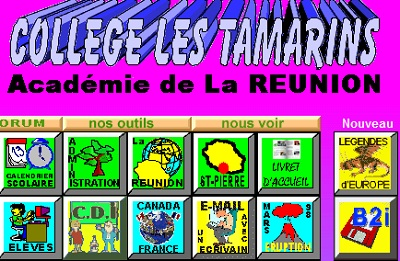

C’est la rentrée ! À cette occasion, je vous propose de visiter ce que je pense être le premier site scolaire de l’île. C’est un projet pédagogique mené par un prof dynamique du collège les tamarins hébergé sur mygale. L’avantage d’un projet pédagogique « Internet », c’est qu’il peut s’y greffer d’autres activités et découverte et d’apprentissage. Ce site en est un bon exemple.

Mais au fait, me souffle une petite voix, c’est quoi un tamarin. Pour en savoir plus sur cet arbre réunionnais lisez ma petite note.
Ce site de classe qui relatait aussi les sorties de la classe et autres découvertes a ensuite été hébergé par le site de l’académie de la Réunion et s’est étoffé de rubriques plus générales comme les rubriques sur le CDI, le B2i et d’autres acronymes de la vie scolaire. Le projet a été ainsi conservé quelques années et a ensuite disparu à l’occasion d’une refonte du site institutionnel. À défaut de découvrir une classe spécifique du collège, vous pouvez tout découvrir sur la vie scolaire, les inscriptions et les projets pédagogiques de ce collège en plein cœur de la ville de Saint-Pierre.
Le collège continue de son coté, à faire découvrir la vie à ses élèves et il arrive même que le site de l’académie de la Réunion s’en fasse l’écho comme lors de du partenariat avec le 2ᵉ RPIMA.